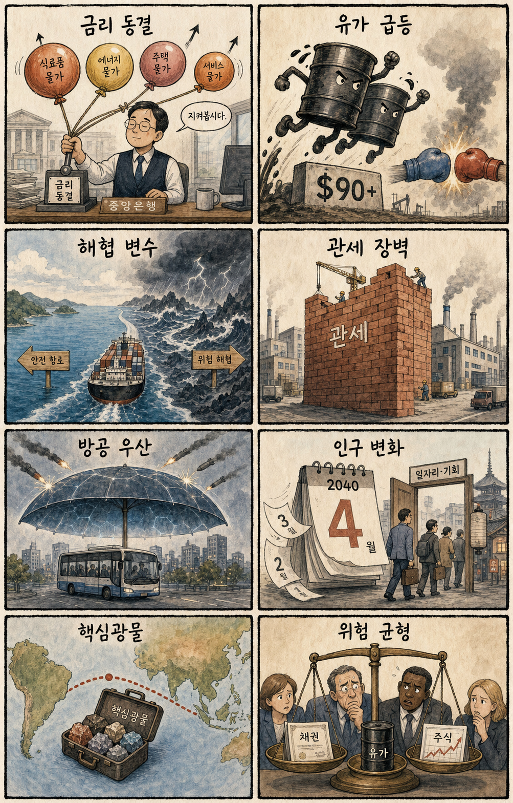
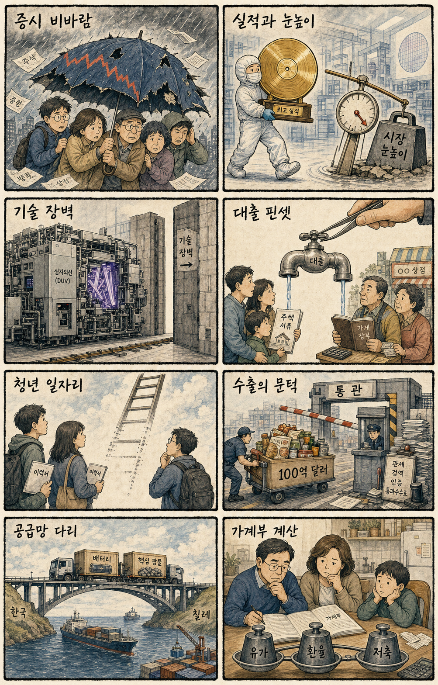

01
힘스앤드허스 14.73% 급락 — FTC 개인정보 제소
내용요약 25.00달러로 14.73% 내렸습니다. 미국 FTC가 이용자 정보를 외부 플랫폼에 제공했다며 제소했다는 보도가 매도세를 키웠습니다.
예상여파 개인정보 규제는 디지털 헬스의 고객획득 방식과 비용 구조를 흔들 수 있어 국내 플랫폼주에도 규제 민감도를 높입니다.
MORNING_BRIEFING_20260730
작성 시각: 2026-07-30 06:40 KST · 직전 미국 정규장과 2026-07-30 KST 당일 공개 기사 기준
미국 7월 29일 정규장은 다우 -2.19%, S&P 500 -1.52%, 나스닥 -1.74%로 동반 하락했습니다. 연준의 금리 동결과 매파적 기조, 중동 충돌 재개로 브렌트유가 90달러를 넘은 점이 국채금리와 위험회피를 함께 밀어 올렸습니다. 반도체 매도가 강해 한국 증시는 시초가 반등 추격보다 유가·환율·외국인 수급 확인이 우선입니다.
| 지수 | 종가 | 등락률 | 한국 증시 영향 |
|---|---|---|---|
| 다우존스 | 51,594.14 | -2.19% | 유가·금리 충격이 가치주까지 번져 국내 경기민감주에 부담 |
| S&P 500 | 7,316.15 | -1.52% | 전면적 위험회피로 한국 대형주 반등 여력을 제한 |
| 나스닥 종합 | 24,442.94 | -1.74% | 반도체 매도와 고금리 부담이 국내 기술주에 직접 압력 |
금리·유가·지정학 위험이 겹치며 위험자산 전반이 후퇴했습니다.
에너지주는 버텼지만 운송·화학·소비와 물가 전망에는 부담입니다.
마이크론·Arm·AMD 급락이 국내 HBM·장비주의 변동성을 높입니다.
시장 급변과 데이터 문턱 미충족으로 오늘 공식 추천은 내지 않습니다.
7월 29일 보고서는 문턱을 통과한 공식 추천이 없었으며 관심 연결종목만 제시했습니다. 사후 가격을 보고 추천 기록으로 바꾸지 않습니다.
| 종목 | 7/29 실제 시가 | 7/29 종가 | 시가→종가 |
|---|---|---|---|
| SK하이닉스 | 1,500,000원 | 1,401,000원 | -6.60% |
| 두산에너빌리티 | 64,700원 | 60,800원 | -6.03% |
| 삼성SDS | 199,000원 | 197,300원 | -0.85% |
| 지수 | 종가 | 등락률 | 해석 |
|---|---|---|---|
| 다우존스 | 51,594.14 | -2.19% | 유가·금리 충격이 가치주까지 번져 국내 경기민감주에 부담 |
| S&P 500 | 7,316.15 | -1.52% | 전면적 위험회피로 한국 대형주 반등 여력을 제한 |
| 나스닥 종합 | 24,442.94 | -1.74% | 반도체 매도와 고금리 부담이 국내 기술주에 직접 압력 |
정유·에너지, 방산, 현금흐름 방어주, 달러 수혜 수출주
반도체·AI 하드웨어, 항공·운송, 화학, 고평가 성장주
내용요약 25.00달러로 14.73% 내렸습니다. 미국 FTC가 이용자 정보를 외부 플랫폼에 제공했다며 제소했다는 보도가 매도세를 키웠습니다.
예상여파 개인정보 규제는 디지털 헬스의 고객획득 방식과 비용 구조를 흔들 수 있어 국내 플랫폼주에도 규제 민감도를 높입니다.
내용요약 739.00달러로 9.94% 하락했습니다. 매파적 금리 경로와 중동발 유가 급등 속에서 고평가 반도체에 매도가 집중됐습니다.
예상여파 메모리 업황 호조만으로 밸류에이션을 지키기 어려운 장세로 국내 HBM·메모리주 변동성 확대가 예상됩니다.
내용요약 224.89달러로 8.11% 내렸습니다. AI 성장 기대가 이미 가격에 반영됐다는 경계와 기술주 전반 위험회피가 겹쳤습니다.
예상여파 AI 설계자산과 고평가 성장주에 실적 눈높이 조정이 이어질 수 있어 단기 저가매수보다 이익 가시성 확인이 우선입니다.
내용요약 429.56달러로 5.51% 하락했습니다. 데이터센터 매출 성장에도 금리·유가 충격과 반도체 매도가 더 크게 작용했습니다.
예상여파 국내 HBM 공급망은 AMD의 장기 성장보다 오늘의 위험회피와 고객별 주문 가시성에 더 민감하게 반응할 수 있습니다.
내용요약 156.75달러로 2.42% 올랐습니다. 중동 충돌 재개로 브렌트유가 90달러를 넘어서며 대형 에너지주가 상대 강세를 보였습니다.
예상여파 정유·에너지에는 단기 우호적이지만 원가 상승을 겪는 항공·운송·화학과 소비에는 반대 방향의 충격입니다.
미국 전 지수 하락과 반도체 동반 급락은 국내 대형 기술주에 직접 부담입니다. 브렌트유 90달러는 정유·에너지의 상대 강세 요인이지만 항공·운송·화학과 소비에는 비용 압력입니다. 전일 KOSPI가 시가 대비 -6.99% 하락한 뒤여서 가격 변동이 과도하며, 원·달러 환율과 외국인 현·선물 동반 수급, 전일 저점 방어를 확인하기 전 추격매수는 피해야 합니다.
오늘은 추천 없음 — 현금 관망
전일까지의 외국인·기관 수급, 컨센서스 변화, 30건 이상의 유사 조건 확률 보정과 예상 손익비 1.5를 동시에 검증하지 못했습니다. 미국 증시 급락과 유가 충격이 겹친 날 임의 점수로 75점 문턱을 채우지 않습니다.
관심 연결종목 S-Oil(유가 상승), SK하이닉스(실적 뒤 가격 안정), 두산에너빌리티(전력·원전)는 관찰 대상이며 매수 추천이 아닙니다. 장전 예상 급등 또는 시초가 급등 시 추격매수 금지입니다.
미국 국채금리와 달러가 동결 뒤 추가 상승하는지 봅니다.
브렌트 90달러 안착과 중동 충돌 확산 여부를 확인합니다.
코스피 현물·선물 동반 매도 지속 여부를 점검합니다.
SK하이닉스와 삼성전자의 전일 저점 방어를 먼저 봅니다.
핵심 요약: 마이크로소프트의 클라우드 실적은 AI 수요의 매출 전환을 보여줬지만 반도체 시장은 높은 기대치와 금리 충격에 흔들렸습니다. 전력 효율 칩, 중국 DUV, 로봇 조작 기술처럼 공급망과 현장 적용을 좌우하는 기술 경쟁은 계속됩니다.
내용요약 마이크로소프트가 AI 수요에 힘입어 시장 기대를 웃도는 실적을 내고 애저 연매출이 처음 1,000억달러를 넘어섰다는 보도입니다.
예상여파 기업 AI 지출이 실제 클라우드 매출로 이어진 점은 긍정적이지만 전력·감가상각 비용과 성장 지속률이 후속 평가를 좌우합니다.
내용요약 구글이 기존보다 효율을 크게 높인 AI용 칩 기술을 공개했다는 보도입니다. 연산 성능뿐 아니라 전력당 처리량을 높이는 경쟁이 빨라지고 있습니다.
예상여파 데이터센터 전력 병목을 완화할 가능성이 있으나 양산 일정과 실제 워크로드 성능, 외부 고객 적용 범위를 지켜봐야 합니다.
내용요약 중국이 심자외선 노광장비 기술 자립을 진전시켰지만 14나노 이하 첨단 공정에서는 여전히 장벽이 남았다는 분석입니다.
예상여파 범용 반도체 공급 경쟁은 거세질 수 있으나 첨단 공정·HBM·패키징 장비의 기술 격차는 당분간 핵심 방어선이 될 전망입니다.
내용요약 SK하이닉스가 역대 최대 수준의 실적을 기록하고도 시장 기대를 밑돌았다는 평가로 주가 압력을 받았다는 보도입니다.
예상여파 좋은 실적과 높은 기대치의 간극이 반도체 밸류에이션 조정을 키울 수 있어 HBM 수익성과 향후 투자 계획이 중요합니다.
내용요약 국내 기업 테솔로의 로봇핸드가 스탠퍼드 연구 플랫폼으로 채택되고 MIT 세미나에 소개됐다는 보도입니다.
예상여파 정교한 조작 기술의 연구 채택은 레퍼런스가 될 수 있지만 상용 고객, 양산 단가와 반복 매출 전환이 다음 과제입니다.
핵심 요약: 연준 동결과 중동 충돌 재개가 금리·유가를 동시에 끌어올렸습니다. 러시아 제재와 관세, 우크라이나 방공 강화가 지정학적 긴장을 더하는 가운데 일본의 인구 변화는 장기 노동시장 재편을 보여줍니다.
내용요약 미국 연방준비제도가 기준금리를 동결했습니다. 중동 충돌과 관세가 하반기 물가를 다시 밀어 올릴 가능성이 정책 변수로 제시됐습니다.
예상여파 금리 인하 기대가 뒤로 밀리면 달러와 국채금리가 강해지고 성장주 밸류에이션과 신흥국 자금 흐름에 부담이 될 수 있습니다.
내용요약 중동 무력충돌 재개로 브렌트유가 배럴당 90달러대로 오르며 국제유가가 7% 넘게 급등했습니다.
예상여파 에너지 기업에는 우호적이지만 항공·운송·화학과 가계 물가에는 부담이며 호르무즈 해협 위험이 변동성을 키울 수 있습니다.
내용요약 미국이 러시아 제재안에 이란 관련 관세를 포함해 최대 500% 보복 관세 가능성을 언급했다는 보도입니다.
예상여파 실행 범위가 넓어지면 제3국 기업의 거래·원산지 검증 부담과 공급망 비용이 커지고 외교 협상도 복잡해질 수 있습니다.
내용요약 일본 인구가 42년 만에 1억2천만명 아래로 내려간 반면 외국인 거주자는 400만명 시대에 들어섰다는 보도입니다.
예상여파 노동력 부족 대응을 위한 자동화와 이민 정책 수요가 커지는 동시에 주거·교육·지역 통합 정책의 중요성도 높아질 전망입니다.
내용요약 미국이 키이우의 패트리어트 방공 미사일 생산을 허가해 우크라이나 방공 역량 확대 가능성이 커졌다는 보도입니다.
예상여파 장기적인 방공 공급 능력은 높아질 수 있지만 생산 일정과 러시아의 대응에 따라 전쟁 장기화와 방산 수요가 이어질 수 있습니다.

핵심 요약: 증시 급변 속 투자자 신뢰와 금융 안정이 중요해졌고 대출 총량 관리와 취약계층 지원의 균형이 과제입니다. 청년 고용의 진입 사다리, K푸드 수출 비용, 한·칠레 핵심광물 공급망은 중기 성장 기반을 좌우할 이슈입니다.
내용요약 급격한 변동성 속 한국 증시 투자자들의 불안과 좌절이 커지고 있다는 외신 시각을 전한 보도입니다.
예상여파 신뢰 회복에는 단기 반등보다 가격발견 안정, 충분한 유동성, 기업 실적과 정책 커뮤니케이션이 중요합니다.
내용요약 금융감독원이 은행권 대출 총량 관리는 유지하되 청년·서민의 자금 애로는 선별 지원하겠다는 방향을 제시했습니다.
예상여파 가계부채 증가를 억제하면서 실수요를 보호하려는 조치로, 은행 심사 기준과 실제 공급 규모가 정책 효과를 가를 전망입니다.
내용요약 자동화와 산업 재편으로 진입형 일자리가 줄면서 청년이 노동시장 첫 단계에서 밀려나는 현상을 다룬 보도입니다.
예상여파 직무교육만으로는 부족하며 기업의 초급 채용, 현장훈련과 생산성 향상을 함께 설계해야 고용 미스매치를 줄일 수 있습니다.
내용요약 K푸드 수출이 100억달러 규모로 성장했지만 지역 식품기업은 인증·물류·마케팅 비용을 크게 부담한다는 분석입니다.
예상여파 수출 저변 확대를 위해 공동 물류와 현지 인증 지원이 필요하며 환율·관세 변화가 중소기업 마진을 좌우할 수 있습니다.
내용요약 한국과 칠레가 기존 자유무역협정을 공급망·핵심광물 협력까지 확장하는 방안을 정상회담에서 논의한다는 보도입니다.
예상여파 리튬·구리 등 핵심광물 조달 다변화에 도움이 될 수 있으며 구체적인 장기계약과 투자보호 조건이 성과의 관건입니다.
